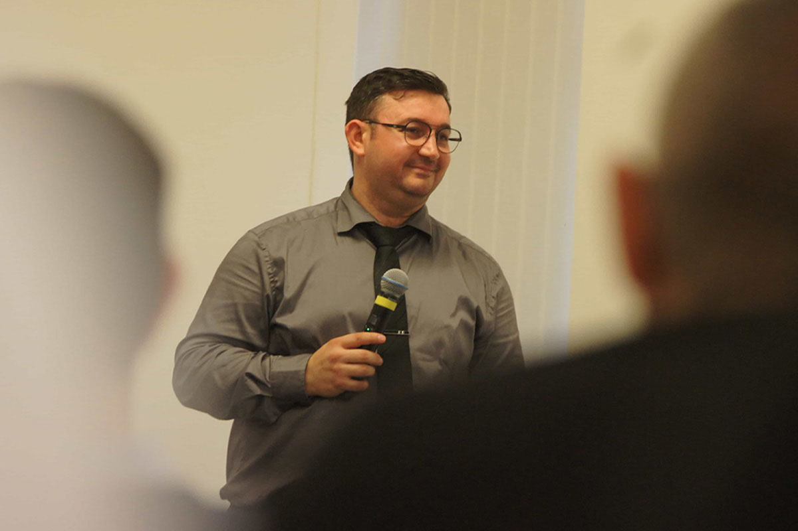
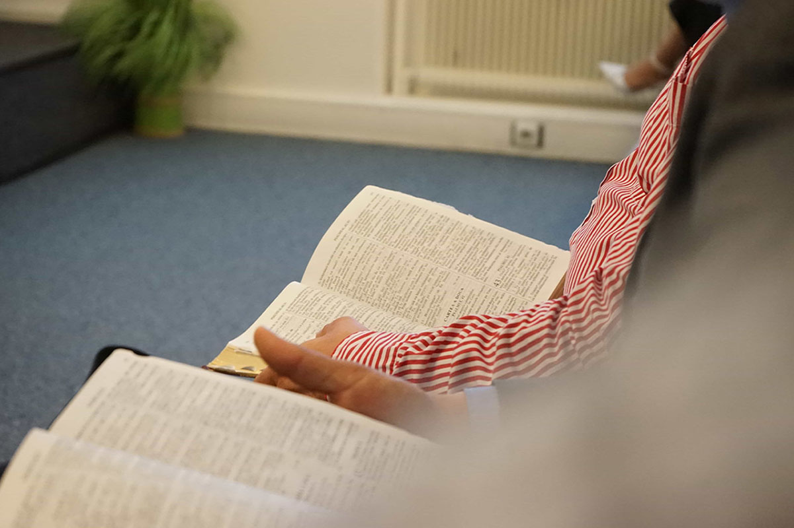
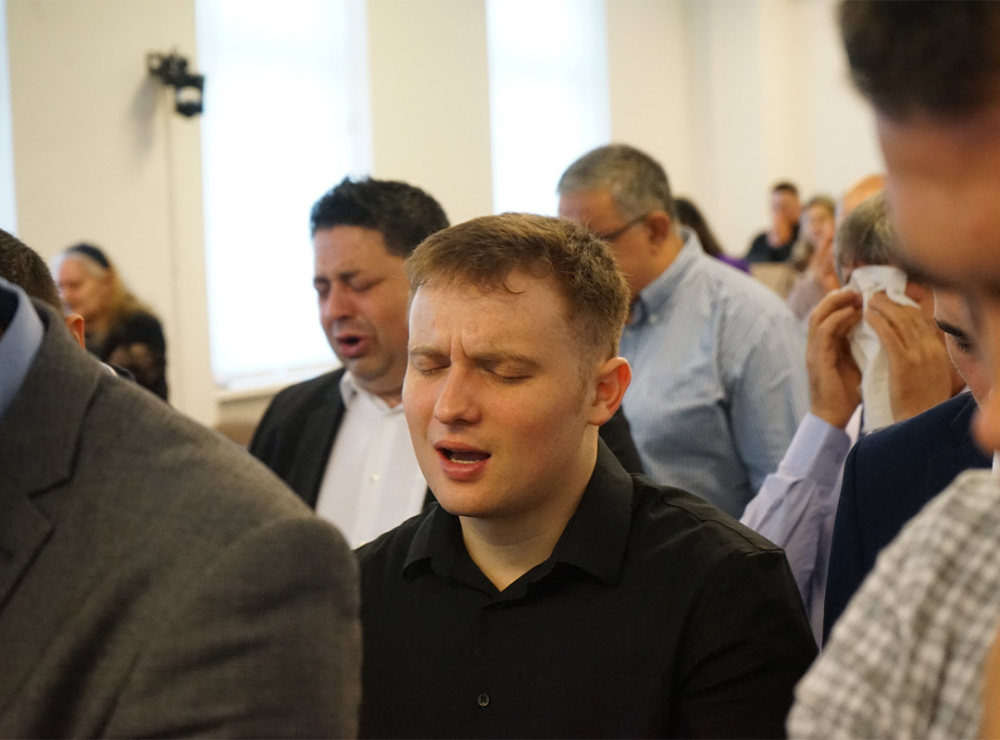
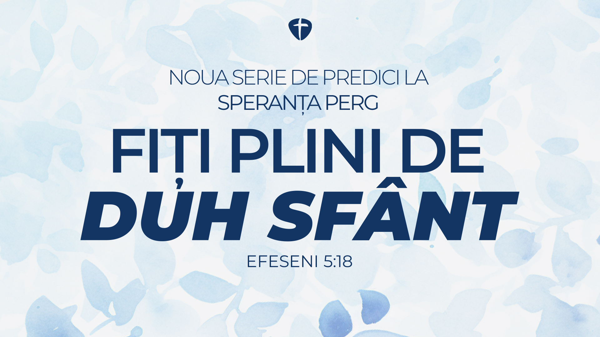

Vino să experimentezi închinarea, părtășia și Cuvântul lui Dumnezeu alături de noi.
Biserica Penticostală Speranța Perg a luat ființă la 8 noiembrie 2020, din dorința unui grup de credincioși de a avea o comunitate vie în care Dumnezeu să fie slujit cu credincioșie, iar Evanghelia lui Isus Christos să fie vestită cu putere.
Lucrarea a început cu aproximativ 23 de persoane – familii din Perg și împrejurimi – și s-a dezvoltat prin rugăciune, viziune clară și implicare practică, în parteneriat cu Biserica Speranța Linz. Astăzi, biserica numără peste 100 de membri și este o comunitate caldă, unită în dragostea lui Christos.


Mesaje relevante din Cuvântul lui Dumnezeu, menite să te zidească spiritual. Vezi predicile anterioare sau urmărește-ne în direct, în fiecare duminică, de la ora 9:00 și 18:00!
Acum o nouă serie de predici despre viața plină de putere,
călăuzire și roadă a Duhului Sfânt. Descoperă cine este El și
cum poate transforma viața ta de zi cu zi.
Efeseni 5:18
Dumnezeu ne-a dăruit pe Isus, Fiul Său, ca un act suprem de dragoste și generozitate. Noi dăruim ca răspuns la ceea ce am primit de la un Dumnezeu bun.
Prin generozitatea ta, ducem mai departe adevărul Cuvântului lui Dumnezeu, susținem misiuni și aducem speranță acolo unde este cea mai mare nevoie.